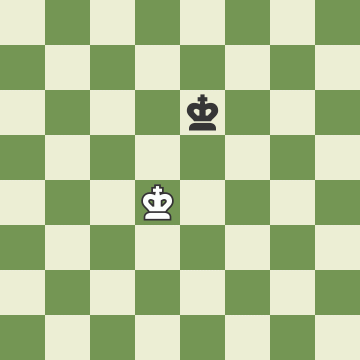
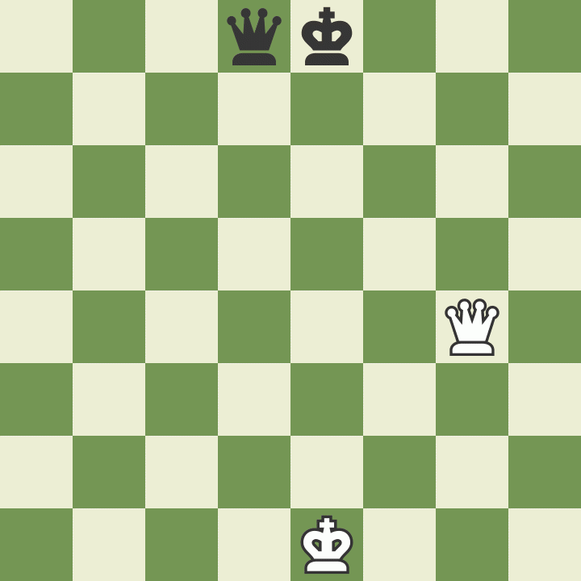
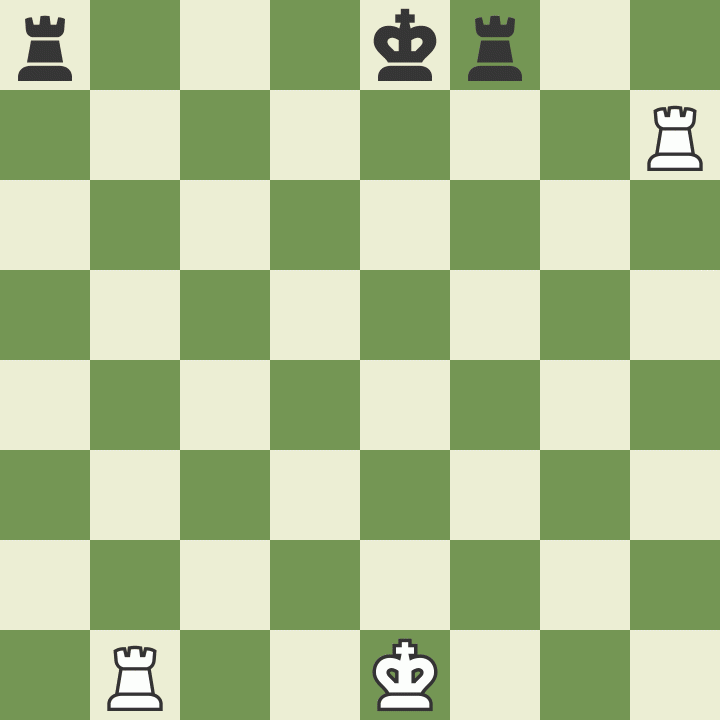
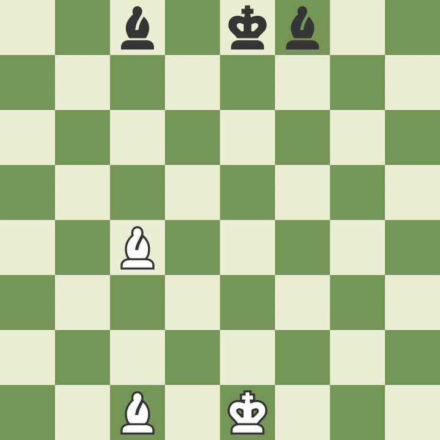
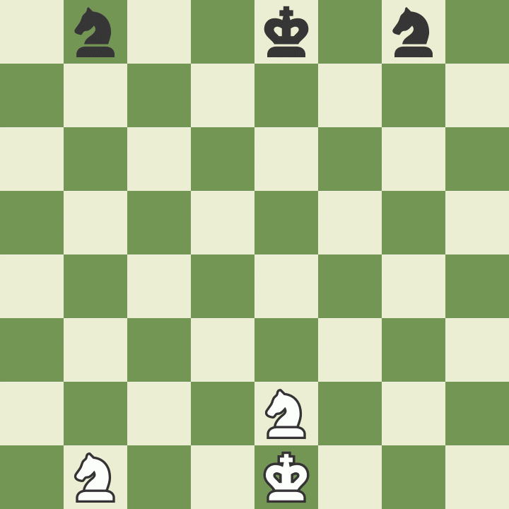
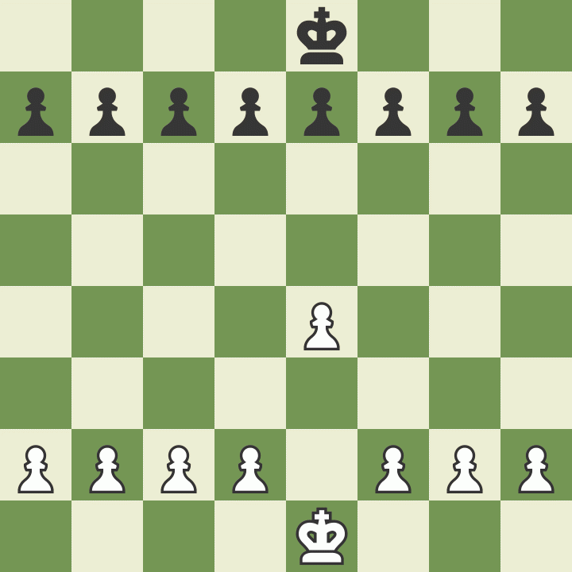

Posted on September 20, 2020 at 12:00 PM
Initial Setup
Chess is played on an 8x8 square board as shown in the diagram above with a dark square in the bottom left-hand corner for each opponent. In the beginning, each side has a king, a queen, two rooks, two bishops, two knights and eight pawns. Rooks are placed on the outside corners, with knights immediately inside of the rooks, and bishops placed immediately inside of the knights. The king and queen are immediately inside of the bishops with the queen starting on the same color as that player. Pawns are placed one row in front of all other pieces. Each row is called a rank and they're numbered 1-8 with the first rank being at the bottom of the board for white. Each column is called a file with the first file being on the left for white. Thus, the fourth row up and fifth column over from whites perspective would be labeled e4. Players take turns moving and may only make one move per turn with white being the first to move.
How the Pieces Move
Each piece moves in a different way and pieces cannot move through other pieces, except for the knight which can jump over other pieces. Pieces are moved into the position of other pieces when they capture another piece. The king is the most important piece even though it is one of the weakest. It can move one square in any direction but can never move himself into check. By check we mean when the king is being attacked by another piece.
The queen is the most powerful piece and can move in any direction (diagonally, sideways, forwards or backwards) as many squares as she likes so long as she doesn't move through any other pieces.
The rook may also move as far as it wants, but unlike the queen cannot move diagonally. He can only move sideways, forwards and backwards. Rooks are considered the second most powerful piece.
Bishops can move as far as they want but may only move diagonally with each bishop starting on one color and therefore must always stay on that color.
Knights move in an "L" shape where they must move two squares in one direction (forwards, backwards, or sideways), and then one square in a direction that is at a 90 degree angle with their initial two-square movement. Knights are the only piece which may jump over other pieces.
Pawns have three different types of moves. On their first turn, they may move either one square forward or two squares forwards. However, after this first turn they may only move one square forward unless they are capturing another piece. Pawns can only capture diagonally and one square in front of them. Pawns may never move backwards. Thus, they cannot capture pieces directly in front of them.
Special Moves
Promoting Pawns
If a pawn reaches the opposing side of the board, it may become any other piece(except for a king). Pawns are usually promoted to a queen but there are a few special cases in which it is advantageous to promote a pawn to a piece other than a queen. Pawns are the only piece which may be promoted.
En Passant
If on a pawns first move it moves out two squares, and in so doing lands to the side of an opponents pawn, then the opponents pawn may move into the square behind the pawn and capture it. The opponent may only perform this move on his/her move immediate move after.
How to Castle
The last special rule in chess is called castling. There are four conditions under which someone may castle and these are: it must be the king's first move, it must be the rook's first move, there cannot be any pieces between the rook and king, and the king cannot move into or through check in the process. When we castle the king is always moved two squares in the direction of the rook and the rook is then placed on the other side of the king from which it started.
Now that you know the rules of chess try out our daily puzzle below!
Winning in Chess
A game of chess is ended when a player is in checkmate, when there's a draw, when someone resigns, or when someone runs out of time (if a timed match is being played). The purpose of the game is to checkmate the opponent's king. A checkmate is when the king is put in check (attacked by an opponents piece) and cannot get out of check. A king may get out of check by moving out of the way, having another piece block him, or capturing the piece which is attacking him. The king is generally not actually captured when he's in checkmate; instead the game is declared over. Draws may happen for one of five reasons. Stalemate occurs when a players king is not in check but he does not have any other legal moves. A draw may be agreed upon by the players. Another way in which a draw may happen is if there are not enough pieces on the board to force a checkmate (e.g. a king and a bishop alone cannot possibly checkmate the opposing king). If the exact same position is repeated three times (although not necessarily in order), a draw is reached. Or lastly, if fifty consecutive moves have been played with neither player moving a pawn or capturing a piece.
And those are the rules of Chess! Check out our Chess Openings page for some well-known opening strategies!